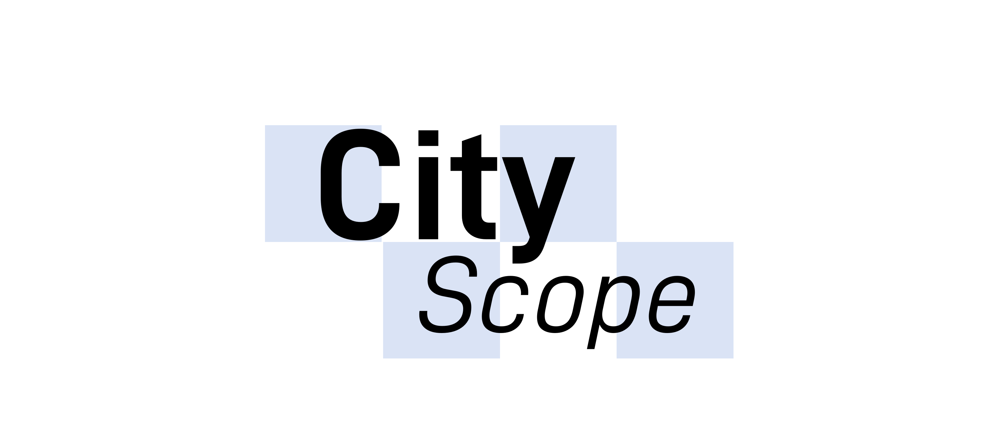
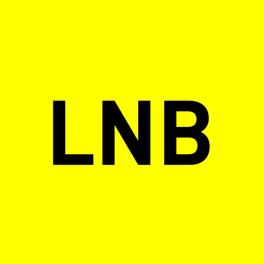
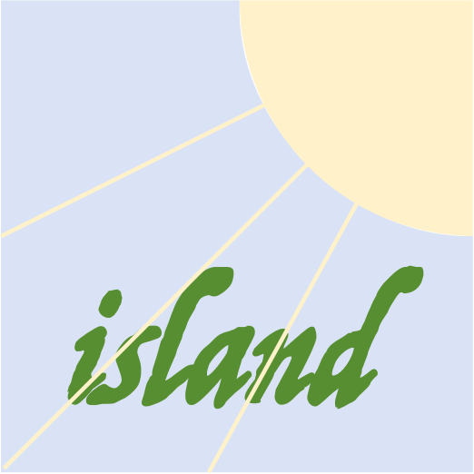

GeoPulse
Open- Remote Sensing of Environment
- ISPRS Journal of Photogrammetry and Remote Sensing
- International Journal of Geographical Information Science
- Annals of the American Association of Geographers




A single-channel n-back memory game where letters appear one by one, and the player enters the letter shown n steps before the current one.

仁 · 勇 · 韧
Copyright © Liu Haiyang. All rights reserved.